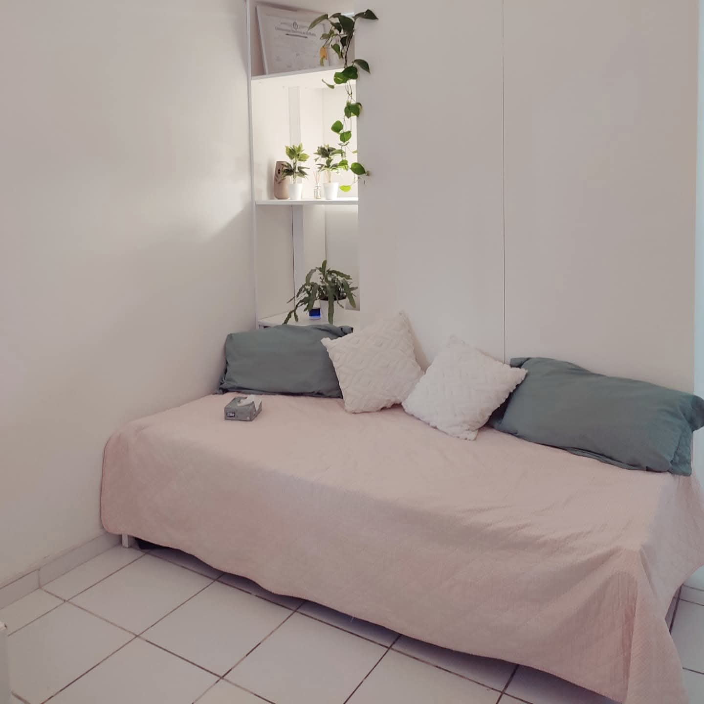
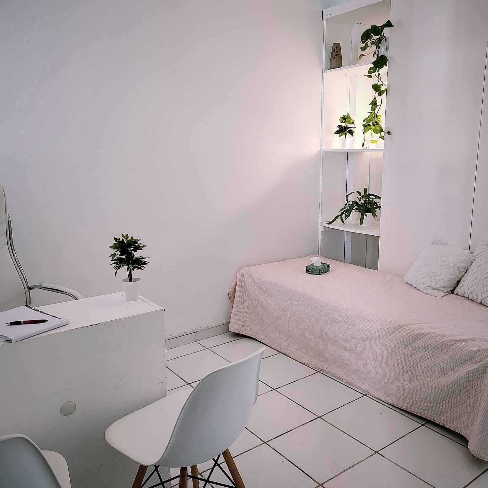
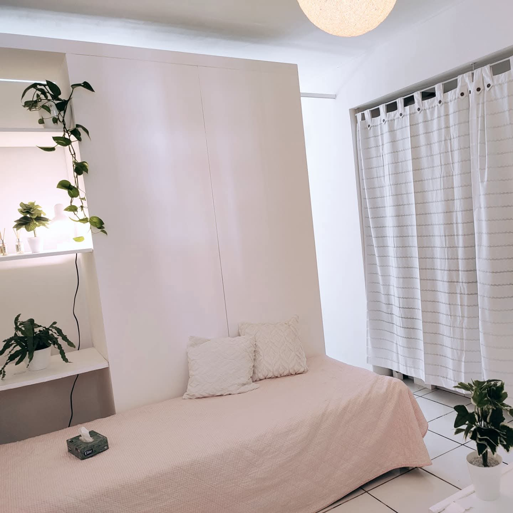

Conocé el Consultorio
Un espacio cálido y profesional diseñado para tu comodidad

Espacio de terapia

Espacio terapéutico

Ambiente acogedor
Espacio privado y confortable
Consultorio confidencial
Ambiente relajado
×